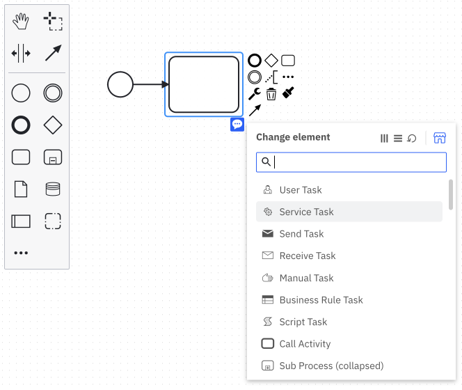
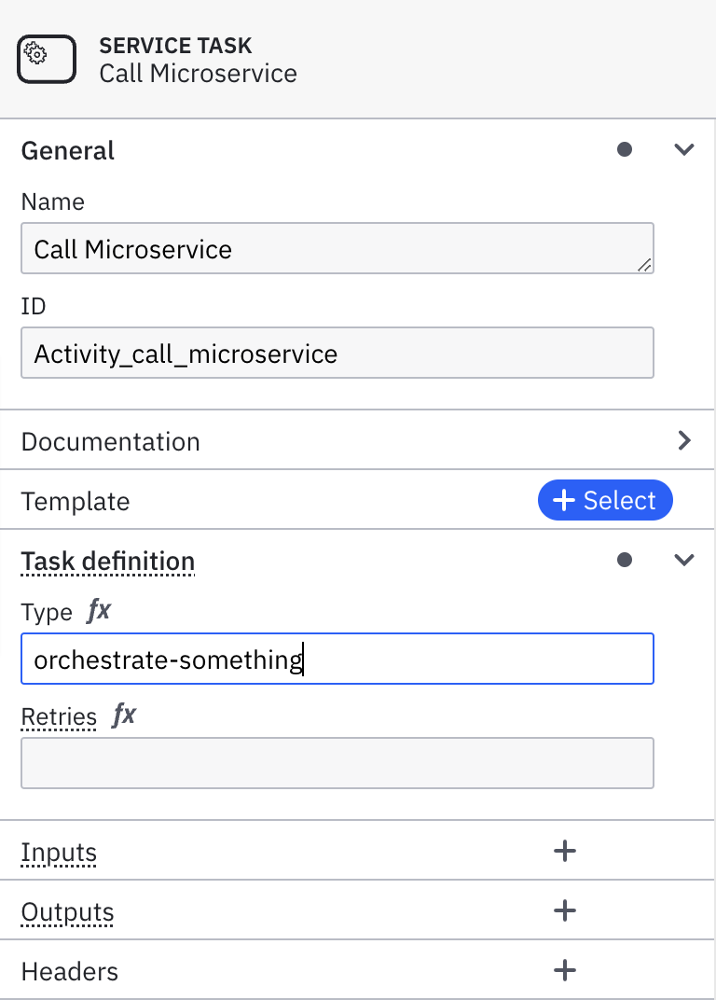

Get started with microservice orchestration
Using Camunda 8, you can orchestrate the microservices necessary to achieve your end-to-end automated business process. Whether you have existing microservices or are looking to build out your microservices, this guide will help you understand how you can start your microservice orchestration journey with Camunda 8.
While this guide uses code snippets in Java, you do not need to be a Java developer to be successful. Additionally, you can orchestrate microservices with Camunda 8 in other programming languages.
Prerequisites
- Ensure you have a valid Camunda 8 account, or sign up if you still need one.
- Java ≥ 8
- Maven
- IDE (IntelliJ, VSCode, or similar)
- Download and unzip or clone the repo, then
cdintocamunda-platform-tutorials/quick-start/microservice-orchestration/worker-java
Design your process with BPMN
Start by designing your automated process using BPMN. This guide introduces you to the palette and a few BPMN symbols in Web Modeler.
-
To create a BPMN diagram, click New project within Modeler.
-
Name your project and select Create new > BPMN Diagram.
-
Give your model a descriptive name and id. On the right side of the page, expand the General section of the properties panel to find the name and id fields. For this guide, we'll use
Microservice Orchestration Tutorialfor the name andmicroservice-orchestration-tutorialfor the id. -
Use Web Modeler to design a BPMN process with service tasks. These service tasks are used to call your microservices via workers. Create a service task by dragging the task icon from the palette, or by clicking the existing start event and clicking the task icon. Make sure there is an arrow connecting the start event to the task. Click the wrench icon and select Service Task to change the task type.

-
Add a descriptive name using the General section in the properties panel. For this guide, we'll use
Call Microservice. -
In the properties panel, expand the Task definition section and use the Type field to enter a string used in connecting this service task to the corresponding microservice code. For this guide, we'll use
orchestrate-somethingas the type. You will use this while creating a worker for the service task. If you do not have an option to add the Type, use the wrench icon and select Service Task.
-
Add an end event by dragging one from the palette, or by clicking the end event when the last service task in your diagram has focus. Make sure there is an arrow connecting the service task to the end event.
-
On the right upper corner click the blue Deploy button. Your diagram is now deployed to your cluster.
-
Start a new process instance by clicking on the blue Run button.
-
In the top left corner of the screen, click the square-shaped Camunda components button. Navigate to Operate to see your process instance with a token waiting at the service task by clicking View process instances.
Create a cluster
To deploy and run your process, you must create a cluster in Camunda 8.
- To create a cluster, navigate to Console by clicking the square-shaped icon labeled Camunda components in the top left corner, and click Console.
- Click the Clusters tab, and click Create new cluster.
- Name your cluster. For the purpose of this guide, we recommend using the Stable channel and the latest generation. Additionally, select your region. Click Create cluster.
- Your cluster will take a few moments to create. Check the status on the Clusters page or by clicking into the cluster itself and looking at the Applications section.
Even while the cluster shows a status Creating, you can still proceed to begin modeling.
Zeebe must show a status of Healthy to properly deploy your model.
Development clusters
Starter plan users have one development cluster, with free execution for development, included in their plan. Deployment and execution of models (process instances, decision instances, and task users) is provided at no cost. Additional clusters can be purchased through your billing reservations.
Visit the clusters page to learn more about the differences between development clusters and production clusters.
Create credentials for your Zeebe client
To interact with your Camunda 8 cluster, you'll use the Zeebe client. First, you'll need to create credentials.
- The main page for Console should be open on another tab. Use Console to navigate to your clusters either through the navigation Clusters or by using the section under View all on the Clusters section of the main dashboard. Click on your existing cluster. This will open the Overview for your cluster, where you can find your cluster id and region. You will need this information later when creating a worker in the next section.
note
If your account is new, you should have a cluster already available. If no cluster is available, or you’d like to create a new one, click Create New Cluster.
- Navigate to the API tab. Click Create.
- Provide a descriptive name for your client like
microservice-worker. For this tutorial, the scope can be the default Zeebe scope. Click Create. - Your client credentials can be copied or downloaded at this point. You will need your client id and your client secret when creating a worker in the next section, so keep this window open. Once you close or navigate away from this screen, you will not be able to see them again.
Create a worker for the service task
Next, we’ll create a worker for the service task by associating it with the type we specified on the service task in the BPMN diagram.
- Open the downloaded or cloned project (repo, then
cdintocamunda-platform-tutorials/quick-start/microservice-orchestration/worker-java) in your IDE . - Add your credentials to
application.properties. Your client id and client secret are available from the previous section in the credential text file you downloaded or copied. Go to the cluster overview page to find your cluster id and region. - In the
Worker.javafile, change the type to match what you specified in the BPMN diagram. If you followed the previous steps for this guide and entered “orchestrate-something”, no action is required. - After making these changes, perform a Maven install, then run the Worker.java
mainmethod via your favorite IDE. If you prefer using a terminal, runmvn package exec:java. - Using the Modeler tab in your browser, navigate to Operate and you will see your token has moved to the end event, completing this process instance.
Wrap up
Congratulations! You successfully built your first microservice orchestration solution with Camunda 8.
A core value of Camunda 8 lies in the flexibility offered to developers. You can write workers in many different languages. Camunda takes care of the orchestration.
Don't want to build the process yourself? Click this button to create it from a template in Camunda 8 SaaS, or sign up first.
Additional resources and next steps
- Learn more about Camunda 8 and what it can do by reading What is Camunda 8 or watching our Overview video in Camunda Academy.
- Get your local environment ready for development with Camunda 8 by setting up your first development project.